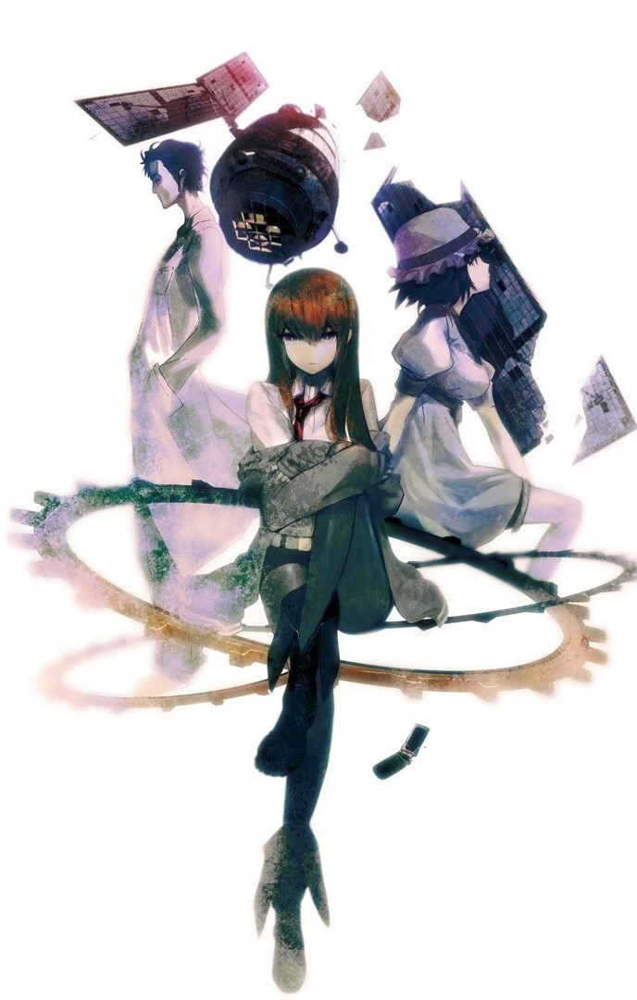
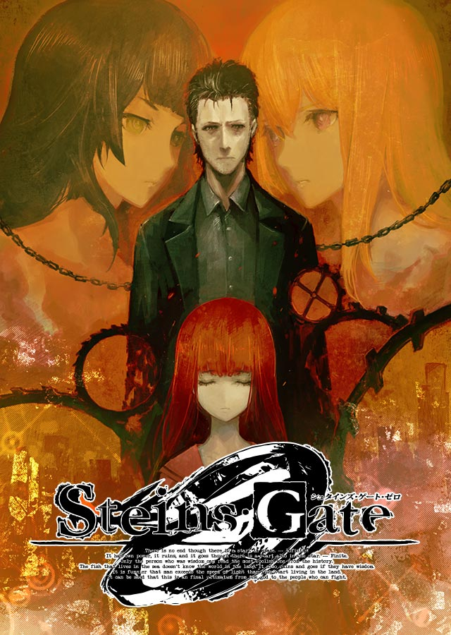
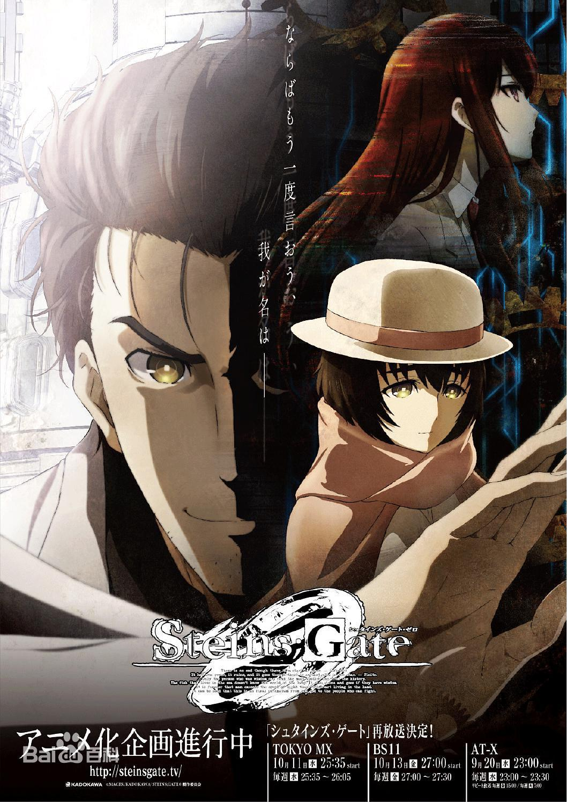

 《命运石之门》
以秋叶原为据点的三人发明小组“未来发明研究所”所长，自称“狂气的科学怪人——凤凰院凶真”的改不了中二病的东京电机大学大一学生冈部伦太郎和他的伙伴们终日重复着古怪发明的开发。2010年7月28日，冈部为了取得学分和同级的好友桥田至一同去了讲义会场，在那里，他们遇见了年仅18岁就成功在美国科学杂志刊登论文的天才少女牧濑红莉栖。然而古怪的是，冈部在几个小时前刚刚目睹了在RADIO会馆8楼倒在血泊中的牧濑。更让人费解的是，这一切在一周前发送给桥田的手机短信中都记载的清清楚楚。 最后冈部查明，原来他们发明的其中一件发明装置中偶然具有了向过去发送短信的功能，也就是具备了时光机类似的机能。而这个时候的冈部连想都没想过这一个偶然的发明将会成为左右世界未来的钥匙，世纪大发明诞生了……
 《命运石之门0》
是由志仓千代丸企划，5pb./Nitro+开发，MAGES.发行的科学冒险系列视觉小说游戏，支持中文。本作是《命运石之门》的正统续作，以描写β世界线的小说三部曲[注 1]和广播剧CD《无限远点的牵牛星》为蓝本，并有同名动画《命运石之门0》等衍生作品。 。
 TV动画《命运石之门0》
是根据5pb.开发和发行的同名游戏《命运石之门0》改编的动画，也是TV动画《命运石之门》的续作。2017年7月28日宣布动画化，由WHITE FOX制作，于2018年4月11日~9月26日放送，全24话